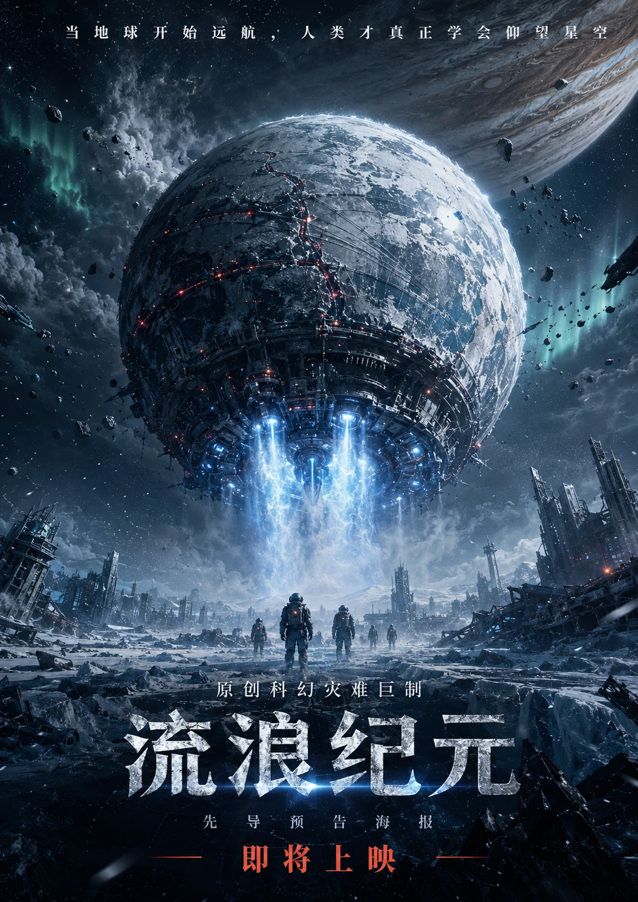
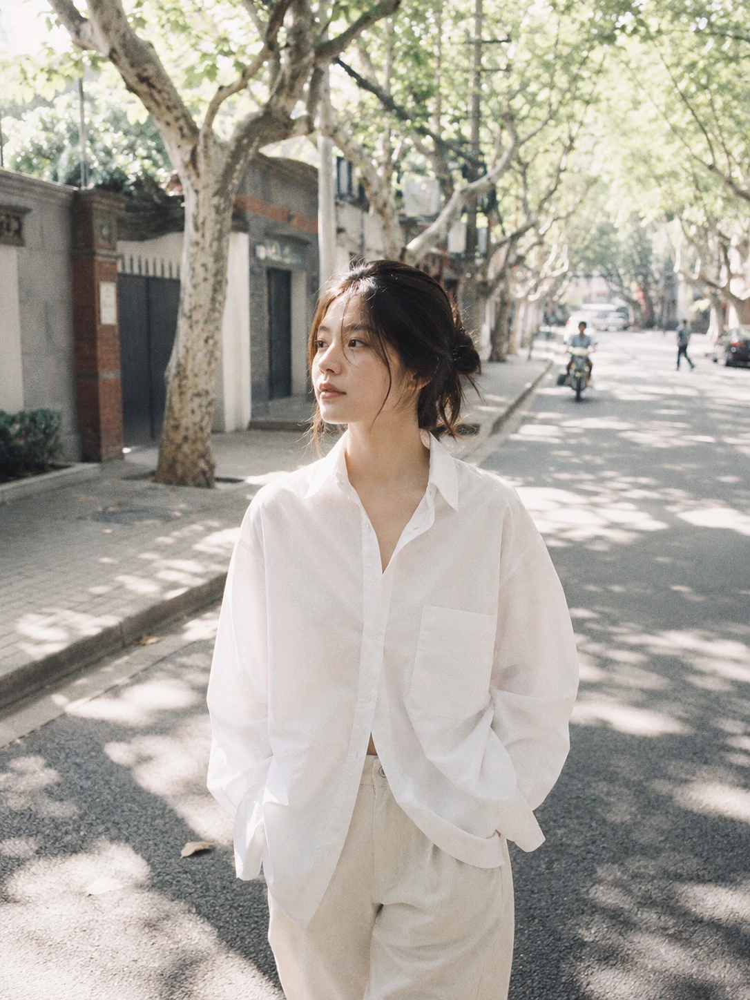
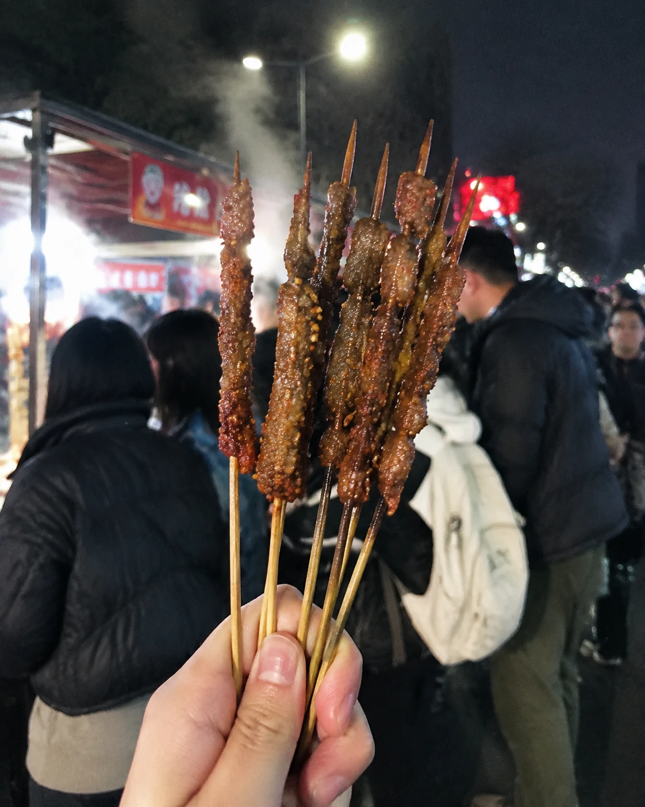
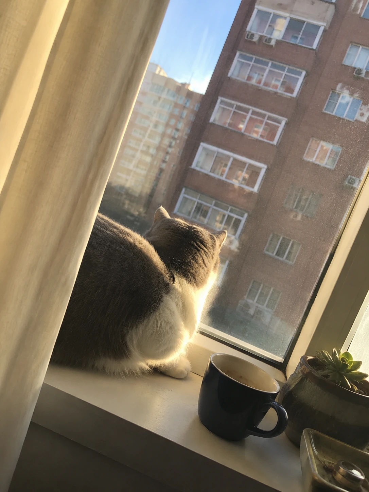
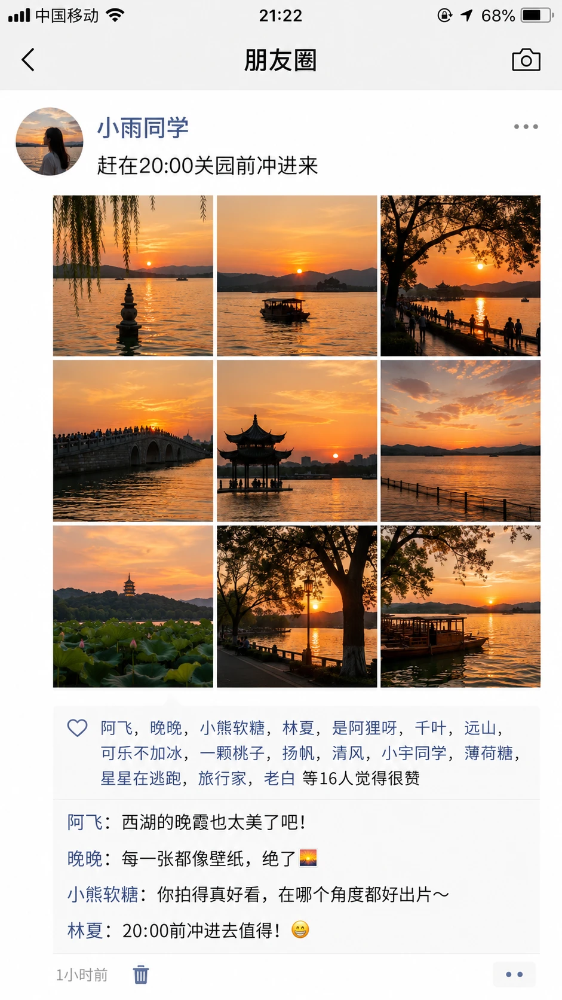
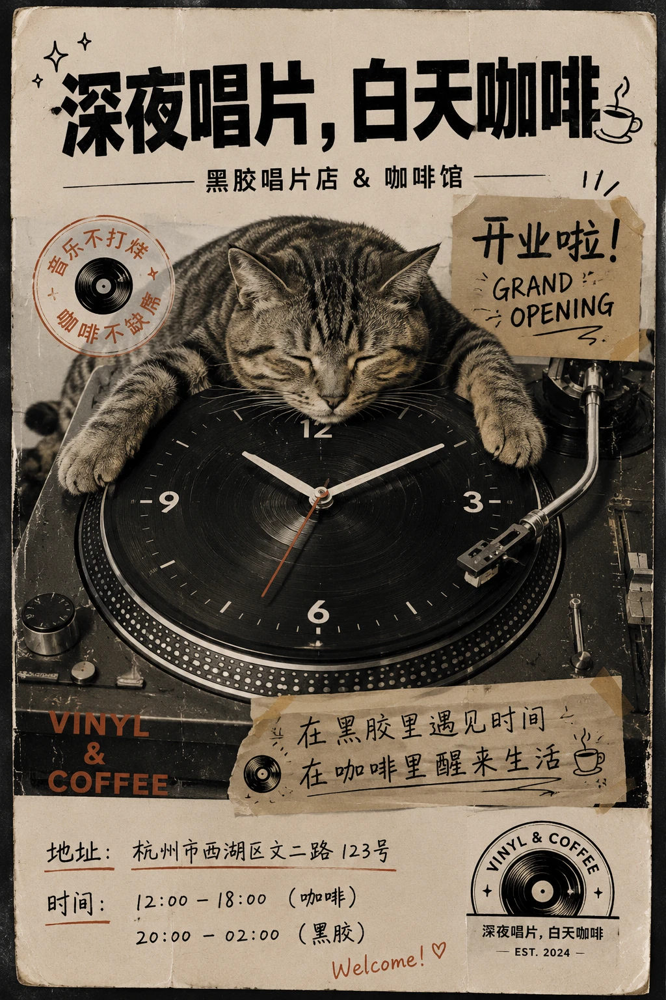
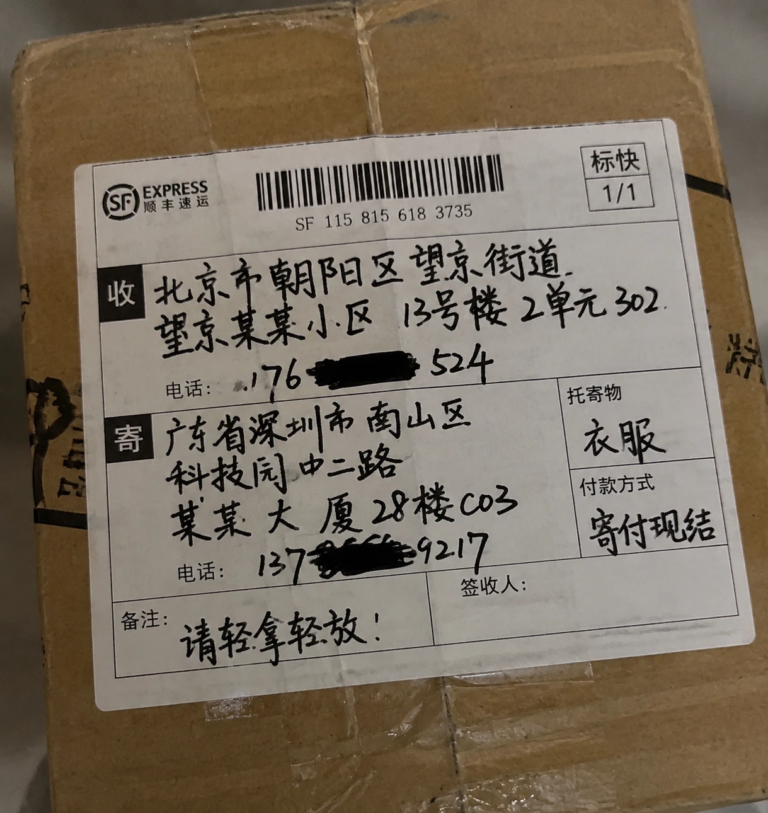
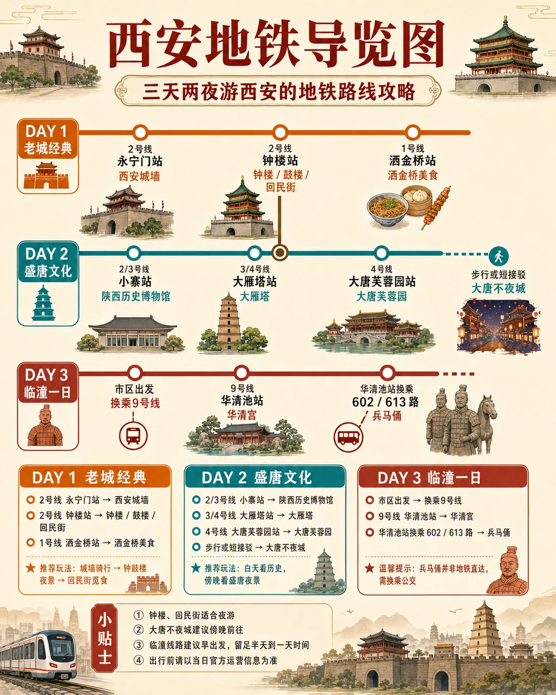
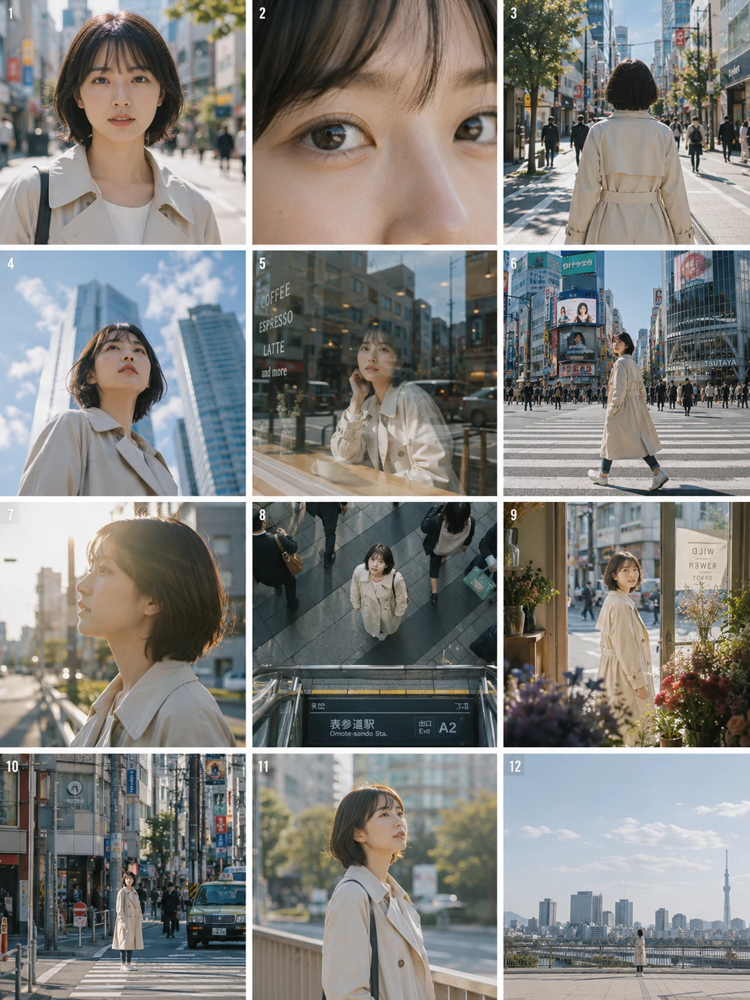
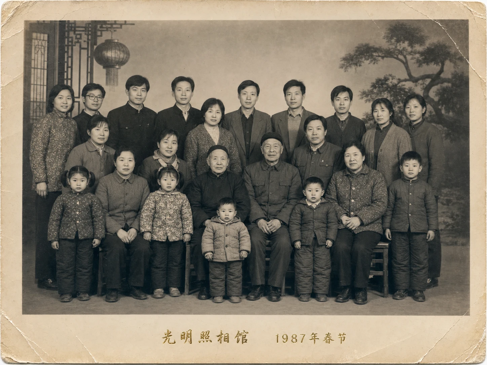

01｜判断需求
先确定图片要完成的任务，才能决定提示词应该写到多细。
同一个生图工具可以面对很不一样的要求。找灵感时，需要给它足够的发挥空间；展示产品时，需要让关键信息准确落到画面中；表达品牌时，需要一个能被记住的视觉想法。
| 任务侧重 | 优先调用的能力 | 提示词需要解决的问题 |
|---|---|---|
| 社交内容需要快速尝试不同风格 | 自由度：允许 AI 补充构图与细节 | 主题是什么，希望呈现什么气氛 |
| 商品内容需要准确展示信息 | 精准度：约束文字、结构与细节 | 哪些内容必须出现，哪些对应关系必须正确 |
| 品牌内容需要有辨识度 | 想象力：组织新鲜的视觉关系 | 哪个创意值得突出，各元素怎样共同表达它 |
第一部分｜自由度 × 社交媒体
02｜生成海报
吕布游戏海报
短指令可以先把人物题材变成一个可讨论的视觉方向。
这类指令给构图和细节留下很大空间。先看人物气质与海报氛围是否符合预期，再补充希望固定的服装、动作或背景。
生成一张吕布的游戏海报。
吕布游戏海报
武则天影视海报
人物身份与作品类型共同决定海报的叙事气氛。
“武则天”给出人物线索，“影视海报”给出表达形式。若用于明确的故事设定，再补充时代、人物状态和需要出现的文字。
生成一张武则天的影视海报。
武则天影视海报
流浪地球风格预告海报
熟悉的类型参照能帮助 AI 建立画面的尺度和情绪。
提示词指定的是创作方向。我们以《流浪地球》风格作为参照，要求生成原创预告海报。AI使用巨大星体、城市、冷色天空与强光，传达宏大科幻题材的紧张感。
复用时，继续补充自己的故事主题与预告文案。
做一张流浪地球风格的原创预告海报。

流浪地球风格预告海报
K-pop专辑封面
专辑封面要把人物群像组织成一个统一的视觉形象。
短指令适合先找时尚方向。AI以方形封面呈现多人组合，通过服装、姿态、灯光与大标题形成整体风格。相比单人海报，这里更值得观察人物之间的安排是否协调。若已有确定的组合设定，继续补充人数、服装关系、封面名称和色彩要求。
生成一张K-pop团体时尚专辑封面。
K-pop专辑封面
03｜模拟胶片
35mm日系街拍
把光线和反差写清楚，胶片感才有具体的画面依据。
35mm 在这里是胶片摄影的表达参照。提示词进一步指定午后梧桐树影、白衬衫、轻微过曝、低对比度与胶片颗粒，让“日系通透”变成可观察的效果。
反之，单写“胶片感”时，这些选择都留给了 AI。
模拟35mm胶片摄影，日系通透审美。午后阳光穿过街道两旁的梧桐树，光斑洒在路面。一位穿oversized白衬衫的年轻女性走在斑驳光影中，双手自然插在口袋里，目光柔和望向镜头侧方。轻微过曝，低对比度，柔和的高光过渡，胶片颗粒，安静日常的街拍氛围。

35mm日系街拍
柯达Portra400街拍
风格名称与具体场景一起使用，才能说明你想要的色彩气氛。
提示词用“柯达 Portra 400”作为风格参照，这是因为型号名称可以帮助描述方向。再补充驼色大衣、巴黎街道、刚亮的街灯与微湿路面，就形成了整体的色彩氛围。
柯达Portra 400胶片质感，一个穿驼色大衣的女人从背后走过一条巴黎街道，手里拿着一束郁金香，街灯刚亮，路面微湿，画面颗粒温柔，色调偏暖黄。
柯达Portra400街拍
富士Pro400H街拍
侧逆光与浅景深能让日常人物场景显得通透。
提示词中的“富士 Pro 400H”与清晨校园、米色针织衫、自行车共同建立轻松气氛。侧面阳光穿过头发形成亮边，浅景深让背景变得柔和。
模拟富士胶片Pro 400H色彩，清晨的大学校园林荫道，一个穿米色针织开衫内搭白T的女生骑着自行车经过，侧头看向镜头，嘴角带一点笑意。阳光从侧面打过来穿过发丝形成轮廓光，树叶的影子在她脸上流动，画面通透干净，浅景深，轻微胶片颗粒。
富士Pro400H街拍
04｜模拟随拍
手机抓拍夜市烤串
少量噪点和现场杂乱能成为日常照片的表达手段。
这张图把举着的烤串放在近处，背景保留人群、摊位与蒸汽。提示词主动要求业余视角、无滤镜和夜景噪点，让画面接近普通手机记录。
业余视角的手机照片，夜市摊位前，一只手举着烤串的特写，背景是模糊的人群和蒸汽。没有滤镜，略带噪点的夜景手机画质，前置摄像头拍摄的那种粗糙真实感。

手机抓拍夜市烤串
手机随拍猫趴窗台
生活感可以通过构图偏斜和普通物件建立。
猫、半杯饮品、多肉与窗外阳光构成一个容易识别的居家场景。稍歪的取景与未经修饰的光线，让画面带有随手记录的感觉。
与夜市案例相比，这里的日常感更多来自空间与物件关系。复用时先描述正在发生的小事，再指定时间、光线和取景方式。
用iPhone拍的一张普通照片，略微歪斜的构图。下午四五点的阳光从窗外照进来，一只猫趴在窗台上看外面，窗台上还有一个半喝完的马克杯和多肉植物。光线没有修饰过，就是日常家里的样子，画面真实到像是随手拍的。

手机随拍猫趴窗台
第二部分｜精准度 × 电商
05｜拆解产品
复杂产品图要把零件、标注与参数逐项对应起来。
长提示词负责明确要求，例如左上标题、右上规格和底部信息栏的规定。AI按要求输出了产品爆炸图，把产品零件分开摆放，用来解释内部结构。
一款机械键盘的产品爆炸图，每个零件悬浮分离——键帽、轴体、底壳、PCB板、卫星轴、定位板、硅胶垫、USB-C接口模块，用细线连接标注名称和参数。左上角标题"机械键盘拆解指南"，右上角标注"87键配列 · 热插拔轴体 · RGB背光"，底部信息栏"键帽材质：PBT双色注塑 | 轴体：佳达隆G Pro 3.0 | 连接方式：有线/蓝牙/2.4G三模 | 续航：200小时（蓝牙）| 重量：980g"。科技感深色背景，像数码博主的测评配图，9:16竖版。

机械键盘爆炸图
06｜呈现文字
朋友圈九宫格截图
界面图的准确性既包括文字，也包括数量和排列。
这条要求同时指定九张西湖日落、配文、点赞数与评论数，生成后逐项检查数量与排列。
生成一张朋友圈截图，九宫格里是九张不同角度的西湖日落，配文"赶在20:00关园前冲进来"，下面显示16个点赞、4条评论。

朋友圈九宫格截图
黑胶唱片店开业传单
创意画面需要给营业信息留下清楚的位置。
原提示词没有给出具体地址与营业时间，图中这些内容由生成过程补出。制作实际传单时，先填入确认后的营业信息，再核对手写体是否易读。
案例 6-12 · 原始提示词
一张黑胶唱片店的开业传单，主体是一只猫趴在唱片转盘上，转盘变成时钟，标题"深夜唱片，白天咖啡"，底部地址和时间用手写体。

黑胶唱片店开业传单
桂花啤酒详情页
产品详情页需要让卖点文字与商品形成清楚的对应关系。
把原料、酒精度、口感、产地四项卖点的具体内容与促销条件告诉 AI，再检查文字和箭头是否指向正确的位置。
一瓶桂花精酿啤酒的电商详情页，产品悬浮在深色背景中央，周围用箭头标注"原料"、"酒精度"、"口感"、"产地"四个信息卡片，底部有"限时买二送一"促销标。
桂花啤酒详情页
皮革笔记本商品主图
商品质感和卖点文字需要共同帮助读者理解产品。
复用时，把材质、缝线和定制服务换成商品真实具备的特点。选图时同时检查商品质感与卖点文字。
一款手工皮革笔记本的商品主图，笔记本摊开在深色木桌上，旁边散落咖啡豆和钢笔，顶部悬浮标注"头层牛皮·手工缝线·可定制烫印"，浅景深。
皮革笔记本商品主图
07｜还原细节
蜂蜜微距滴落
材质细节需要通过光线、形状和接触关系表现。
蜂蜜从金色搅拌棒滴向黑色大理石，侧逆光照出琥珀色与透明感。全黑背景减少干扰，让注意力集中到液滴、拉丝和台面反光。
一滴蜂蜜从金色搅拌棒上缓缓滴落，落在黑色大理石台面上溅起微小涟漪，侧逆光勾勒出蜂蜜的琥珀色透明感，背景全黑，微距镜头，8K。
蜂蜜微距滴落
手写快递面单
日常信息可以保留手写质感，同时保持字段完整。
纸张、笔迹和纸箱的使用痕迹共同营造真实感。检查时兼顾手写质感与地址、部分遮挡电话、寄件人等字段的完整性。
一张手写的快递面单，贴在纸箱上，收件地址、电话（部分遮挡）、寄件人信息用黑色记号笔填写，字迹潦草，纸箱表面有胶带痕迹和运输磨损。

手写快递面单
西安地铁导览图
导览图里的文字清楚和路线正确需要分别核对。
原提示词只给出“三天两夜游西安的地铁路线攻略”和“文字不能乱码”，没有提供经过确认的站点与线路清单。示例呈现了按天分组的路线和景点信息。若要制作可用的出行导览，应先提供核实过的路线资料，再检查站名、换乘关系与景点位置。
案例 6-17 · 原始提示词
西安地铁导览图，主题是：三天两夜游西安的地铁路线攻略。文字不能乱码。

西安地铁导览图
第三部分｜想象力 × 品牌营销
08｜编排分镜
一组分镜需要在角色稳定的前提下变化观看角度。
这个案例固定短发女主、米白风衣、晴天下午和东京街头，再安排 3 列 4 行、共 12 格画面。景别指人物在画面中有多大，机位指从哪个位置和角度拍摄；POV 指从角色或指定位置出发的观看视角。
拿到分镜网格后，连续检查角色身份与服装是否一致，再判断镜头变化能否串起想要的情绪。
做一张 3x4 的电影分镜网格，同一个短发女主角穿米白色风衣，场景是晴天下午的东京街头。12 格分别是正面近景、眼神特写、背影中景、低机位仰拍、隔着咖啡店玻璃的反射镜头、穿过斑马线的跟拍镜头、侧脸迎光、地铁出口俯拍、从花店门口向外看的 POV、街角长焦压缩、站在阳光里的停顿、最后一格远景留白。要求角色身份高度一致，画面明亮、有空气感，像都市电影前期分镜。

电影分镜网格
09｜构造场景
青花陶瓷活化
让图案延伸成真实空间，可以建立一个鲜明的视觉创意。
青花山水从破开的茶杯表面延伸到桌面，成为微缩景观。这个创意围绕“杯面图案活过来”展开，杯子、山水与桌面之间有明确的连接关系。
一个破开的陶瓷茶杯，杯身上的青花图案"活"了过来，山水和飞鸟从杯面延伸到桌面上变成真实的微缩景观。
青花陶瓷活化
1980年代全家福
年代感来自人物、影像质地和文字细节的共同配合。
四世同堂的人物安排、微微泛黄的黑白影像、相纸褶皱和照相馆落款，要使用同一套年代线索。
一张1980年代老照相馆的全家福，四世同堂，黑白照片微微泛黄，边角有相纸褶皱，底部烫金字"光明照相馆 1987年春节"。

1980年代全家福
10｜塑造调性
清水混凝土空间
空间中的光线和留白也能承担视觉表达。
提示词以安藤忠雄风格作为参照，安排清水混凝土、顶部天光、空椅子与浅水倒影。人物缺席后，光带和空间比例成为画面中心。
安藤忠雄风格的清水混凝土空间，一束天光从顶部缝隙打在一把空椅子上，地面有浅水倒映出光带的轨迹，没有人，大面积灰白调，对称构图。
清水混凝土空间
方形商业海报
明确的视觉层级能让产品与标题迅速进入视线。
提示词只限定 1:1 方形、高端商业海报、强视觉层级与清晰文字区块。AI自行形成了以“X1”设备为主体的科技产品发布海报。实际制作时补齐产品、品牌和活动文案；示例中的产品名称、功能、日期与地点均不当作真实发布信息。
一张1:1正方形的高端商业海报，强烈的视觉层级，精致的排版，大胆但现代的构图，清晰的文字区块。整体像顶级广告公司的提案出品——适用于书籍、课程或品牌推广。
方形商业海报
西安城市文化海报
城市主题需要把人物、地标和文字组织成同一个故事。
提示词要求水墨泼染与双重曝光。双重曝光在这里指把人物轮廓与城市景观叠合：历史人物侧像承载地标，下方人物群像延续城市生活气息，巨幅“西安”与印章明确地域主题。
用于具体宣传任务时，补充选定的人物、地标和正式文案，再检查各元素是否共同表达希望呈现的城市气质。
一张西安文化宣传海报，9：16竖版，水墨泼染+双重曝光风格。
主体：西安具有代表性的历史名人半身侧像，泼墨飞白笔法。
叠加：人物轮廓内外融入西安标志性自然与人文地标，附竖排小标签。
底部：呼应西安气质的人物群像，墨雾渲染动势。
色调：米黄宣纸底，水墨黑+赭石+朱砂红，大面积留白。
文字：左侧巨幅"西安"行草+朱红印章，配主标语与四句八字文案。

西安城市文化海报
小结
好的创作，懂得在探索中放开，在关键处收紧，在熟悉处突破。
- 自由度，让可能性展开：方向尚未确定时，给探索留出空间，让更多选择浮现。
- 精准度，让意图落地：把重要的要求说清楚，让结果经得起细节的检验。
- 想象力，让熟悉的事物产生新意：重新组合已有元素，创造值得被记住的表达。
当任何画面都能被生成，你想表达什么就变得格外重要。